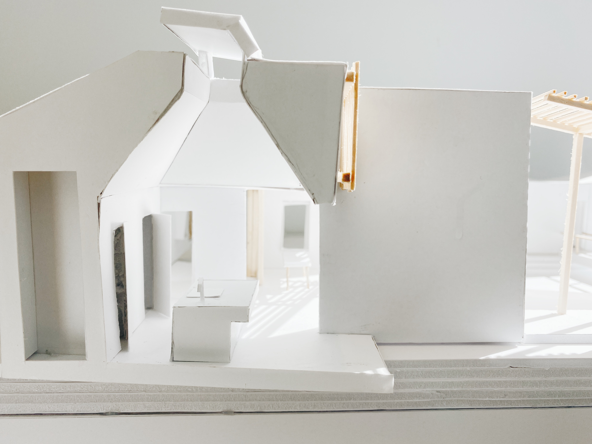
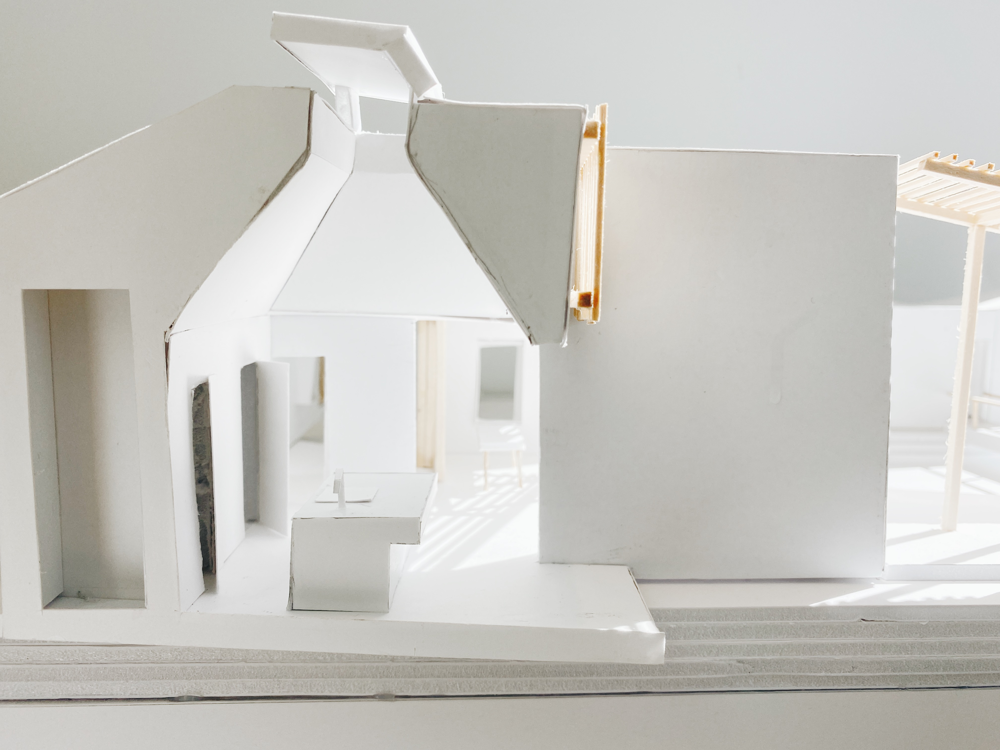

Portfolio by Kimberly Van Houten
Portfolio by Kimberly Van Houten
Fall 2021 | Architectural Design I (UG1) | Professor Ishan Pal | With Yin To Wong and Blaise Gimber
House on the Stream is located in Alibaug, India which is a coastal region known for its lush forests and large beaches. The project was completed in 2013 and serves as a private vacation residence. The key features of this house are the ways that the structure interact with the landscape through circulation and crafting views. The goal of this exercise was to copy the existing conditions of the home to better understand the intentions of the architects and the house itself. This was achieved by translating the house through a set of drawings and a model.
 
